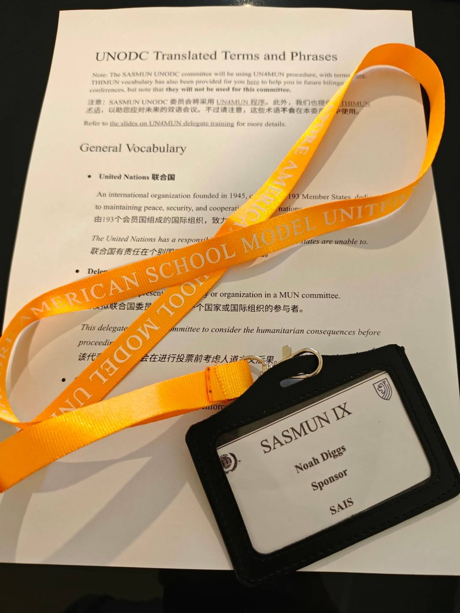

The Language of the Room
The most electric committee at this weekend’s Model United Nations conference wasn’t in English.
I helped prepare delegates for Singapore American School’s Mandarin-language Office on Drugs and Crime committee, which debated cyber scam compounds and transnational fraud networks in Southeast Asia. Teaching Model United Nations means teaching three things:
01 · Topic
The multi-billion dollar scam industry in Southeast Asia, how scammers operate and the techniques they use, and how vulnerable people are often coerced into scam syndicates.
02 · Procedure
When and how to speak in a debate, forming blocs and building alliances, and formatting solution documents formally.
03 · Technique
Identifying reliable sources when researching, answering a hard question without panicking, making allies and hearing out the opposition.
Now imagine learning all of this in a language you’ve only known for a year.
In a previous English-language committee, one of my English Language Learning students was given a formal warning for sounding “too polished,” even being accused of using AI to write his speeches for him. In reality, he’d used a translation tool to understand the issue, wrote his speech in the language he knew best, then delivered the translated output as his speech.
It was an honest mistake, but he was shattered by it. The argument, the thinking, and the writing were completely his own, but in using the translation app, his words and originality had become distorted. I realized that I needed to go even deeper on teaching students how to use technology (AI, translation sites, search engines) to aid understanding while writing in 100% their own words.
In Singapore American School’s Mandarin committee, that same student was leaning in, asking sharp questions, and laughing with his peers. His intelligence hadn’t changed. The language of the room had. He was able to express himself freely and naturally, surrounded by peers who understood him.
From the delegates’ bilingual glossary
Singapore American School’s MUN students built a comprehensive glossary so delegates could hold both vocabularies side by side.
强迫犯罪
forced criminality
地下钱庄
underground banking

As a Kodály-trained music educator, I have always believed learning starts in the child’s mother tongue and builds outward. Now, firsthand, I understand that it’s the same with debate, analysis, and global issues.
Multilingual classrooms don’t dilute rigor. They widen who gets to show it.
Noah Diggs · Schoolwide MUN Coordinator